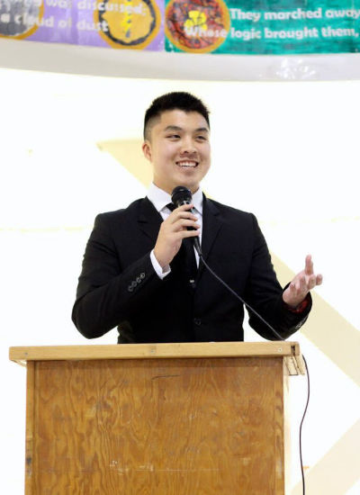

<!DOCTYPE html>
<html >
<head>
  <!-- Site made with Mobirise Website Builder v4.7.7, https://mobirise.com -->
  <meta charset="UTF-8">
  <meta http-equiv="X-UA-Compatible" content="IE=edge">
  <meta name="generator" content="Mobirise v4.7.7, mobirise.com">
  <meta name="viewport" content="width=device-width, initial-scale=1, minimum-scale=1">
  <link rel="shortcut icon" href="assets/images/idk-logo-122x207.png" type="image/x-icon">
  <meta name="description" content="Site Builder Description">
  <title>Reflection</title>
  <link rel="stylesheet" href="assets/web/assets/mobirise-icons/mobirise-icons.css">
  <link rel="stylesheet" href="assets/tether/tether.min.css">
  <link rel="stylesheet" href="assets/bootstrap/css/bootstrap.min.css">
  <link rel="stylesheet" href="assets/bootstrap/css/bootstrap-grid.min.css">
  <link rel="stylesheet" href="assets/bootstrap/css/bootstrap-reboot.min.css">
  <link rel="stylesheet" href="assets/dropdown/css/style.css">
  <link rel="stylesheet" href="assets/theme/css/style.css">
  <link rel="stylesheet" href="assets/mobirise/css/mbr-additional.css" type="text/css">
  
  
  
</head>
<body>
  <section class="mbr-section info3 cid-qU5r0YzsgV" id="info3-q">

    

    <div class="mbr-overlay" style="opacity: 0.3; background-color: rgb(35, 35, 35);">
    </div>

    <div class="container">
        <div class="row justify-content-center">
            <div class="media-container-column title col-12 col-md-10">
                <h2 class="align-left mbr-bold mbr-white pb-3 mbr-fonts-style display-2">
                    Reflections</h2>
                <h3 class="mbr-section-subtitle align-left mbr-light mbr-white pb-3 mbr-fonts-style display-5">Our group member's thoughts, reflections, and contributions to this project.</h3>
                <p class="mbr-text align-left mbr-white mbr-fonts-style display-7">
                    Click on the arrows to scroll through different team members.</p>
                
            </div>
        </div>
    </div>
</section>

<section class="engine"><a href="https://mobirise.me/w">html5 templates</a></section><section class="menu cid-qTkzRZLJNu" once="menu" id="menu1-7">

    

    <nav class="navbar navbar-expand beta-menu navbar-dropdown align-items-center navbar-fixed-top navbar-toggleable-sm">
        <button class="navbar-toggler navbar-toggler-right" type="button" data-toggle="collapse" data-target="#navbarSupportedContent" aria-controls="navbarSupportedContent" aria-expanded="false" aria-label="Toggle navigation">
            <div class="hamburger">
                <span></span>
                <span></span>
                <span></span>
                <span></span>
            </div>
        </button>
        <div class="menu-logo">
            <div class="navbar-brand">
                <span class="navbar-logo">
                    <a href="https://mobirise.com">
                         
                    </a>
                </span>
                <span class="navbar-caption-wrap"><a class="navbar-caption text-white display-5" href="index.html">Idea Development Toolkit</a></span>
            </div>
        </div>
        <div class="collapse navbar-collapse" id="navbarSupportedContent">
            <ul class="navbar-nav nav-dropdown nav-right" data-app-modern-menu="true"><li class="nav-item dropdown"><a class="nav-link link text-white dropdown-toggle display-7" href="https://mobirise.com" data-toggle="dropdown-submenu" aria-expanded="false"><span class="mbri-info mbr-iconfont mbr-iconfont-btn">&nbsp;About</span>
                        </a><div class="dropdown-menu"><a class="text-white dropdown-item display-7" href="socialsetting.html">Social Setting<br></a><a class="text-white dropdown-item display-7" href="motivations.html">Motivations</a></div></li><li class="nav-item dropdown open"><a class="nav-link link text-white dropdown-toggle display-7" href="https://mobirise.com" data-toggle="dropdown-submenu" aria-expanded="true"><span class="mbri-setting mbr-iconfont mbr-iconfont-btn">&nbsp;Iteration</span>
                        </a><div class="dropdown-menu"><a class="text-white dropdown-item display-7" href="prototypes.html">Prototypes<br></a><a class="text-white dropdown-item display-7" href="evaluations.html">Evaluations<br></a></div></li>
                <li class="nav-item">
                    <a class="nav-link link text-white display-7" href="reflections.html">
                        <span class="mbri-search mbr-iconfont mbr-iconfont-btn">&nbsp;Reflection</span></a>
                </li><li class="nav-item">
                    <a class="nav-link link text-white display-7" href="https://mobirise.com">
                        </a>
                </li></ul>
            
        </div>
    </nav>
</section>

<section class="carousel slide testimonials-slider cid-qU5qSkK5Pf" id="testimonials-slider1-p">
    
    

    

    <div class="container text-center">
        

        <div class="carousel slide" data-ride="carousel" role="listbox">
            <div class="carousel-inner">
                
                
            <div class="carousel-item">
                    <div class="user col-md-8">
                        <div class="user_image">
                            
                        </div>
                        <div class="user_text pb-3">
                            <p class="mbr-fonts-style display-7">To start off, we created a prompt that could spur discussion and generate ideas for our social computing prototype. A prompt was important for us to create because it simulated the social context of an objective for a team or group during their ideation. In Steven Dow’s paper, “A Pilot Study of Using Crowds in the Classroom”, he states that “online crowds have the potential to significantly increase the number of valid ideas on the table, but only if the crowd understands the problem space and contextual constraints”, which supports the importance of creating a prompt (Dow, 4). For the first prototype, we added a “like” button for users to like an idea after everyone finished brainstorming ideas. We added this feature because we wanted the users to see which idea would receive the most likes, and that could them see which ideas are the most popular. For the first prototype, we made users freely comment on ideas after they got to click “like” on any ideas they wanted to, but they were assigned a specific column on the spreadsheet. They were each assigned a column to try to make it easier for them to keep track of where they could comment. We wanted to allow users to comment on ideas because this would generate discussion on the ideas that the users came up with. The comments were used in the discussion experience of our prototype to let the commentator explain their comments and express their opinion on the idea. We wanted our users to comment on ideas, so that the discussions could lead into the pros and cons of all the ideas. This would allow the users to view and analyze the ideas that were brainstormed. What we learned between the first and second prototype was that the prompt influences how the users interact with our prototype. The first prompt dealt with finding activities to do for a graduation party. The prompt was simple and it did not receive a lot of discussion and comments. We learned that we had to provide a prompt that was more serious and could utilize the concepts the users learned in class. That was why, for the second prototype, we created a prompt for the users to generate ideas on how a future class like COGS 123A or COGS 123B could be structured. After this second prototype, we also learned that the prompt influences the end goal of the ideas generated. Our prompt was more broad, so it generated many good ideas, but that made it difficult for users to decide on one final idea that was the best. If our prompt was more specific, such as, “What should the name for a future class like COGS 123A be?”, the end result would be easier for users to decide on one idea that was the best.
<br><br>        	For the second prototype we changed the experience and steps to use our prototype based on feedback. From our audience feedback, we learned that letting users to vote/like for an idea and then after commenting to start a discussion could be redundant. By having the commenting and discussion come after the voting of ideas, this would make the voting of ideas be less influential. The structure of our prototype experience made the voting appear less impactful because it came before the discussion &amp; commenting. That is why we changed the flow and experience of our second prototype. After users submit their ideas based on the prompt, they get to comment on ideas first. After everyone finishes commenting on ideas, the discussion was formed. Finally, once the discussion was over, everyone could vote and like the ideas. We changed our user experience to make the last phase of the prototype, voting for ideas, to be more impactful. By making the voting phase be at the very end, the users can decide on what idea was the best or see which ideas are the most popular based on their discussion.
<br><br>        	Kenneth created the google scripts for the spreadsheets to have the feature of allowing users to like or vote for an idea. The script allowed users to click on a button on the spreadsheet which would increase the number of likes of an idea by 1. This function was created for the prototype because it would help users to easily view the ideas that were the most popular. Kenneth also created the google script that would automatically update a google form with a list of ideas the users submitted at the beginning of the prototype. This was created for the second prototype because from the first prototype feedback, we learned that assigning each user a column to comment on an idea made it difficult to view the comments. It was difficult since the comments for an idea would span from left to right, which made it hard for users to see all the comments for an idea. Using a google form for users to freely comment on any idea they want made the user experience better and made viewing the comments easier. The users only had to type in their comments for the ideas on a single google form, and then they could easily view the comments for each idea in a list format on the spreadsheet.&nbsp;<br></p>
                        </div>
                        <div class="user_name mbr-bold pb-2 mbr-fonts-style display-7">
                            Kenneth Nguyen</div>
                        
                    </div>
                </div><div class="carousel-item">
                    <div class="user col-md-8">
                        <div class="user_image">
                            
                        </div>
                        <div class="user_text pb-3">
                            <p class="mbr-fonts-style display-7">My role on this project was about classifying the high level ideas for what we want to accomplish and planning out the steps in our experience prototype to achieve the goals our prototype is trying to accomplish. This involved working on the prompts for what questions we were going to ask the group and planning out what each step in our prototype should look like in order to achieve our goal of having the group reach a consensus at the end. I created many of the google forms we used in both iterations of our prototypes, making sure that the questions on the forms were set up so that we got the right kind of inputs from the user. In addition to this, I worked on our user instructions document as well as creating the slidedeck for our second prototype. Most of my effort went into planning out each of our stages any trying to visualize how the wording of our questions and UI elements of our prototype would affect how easy it is to understand and how well it would facilitate group discussion. This involved creating the prompt we used as well as considering the tradeoffs of using different orderings for the steps in our prototype and deciding how many phases we should use, and what steps would be included in each of the phases. <br>
<br>I took on this role because I felt like the more technical side of the prototype was being handled in an excellent way through Kenneth and Julian, and I wanted to make sure I was supporting their technical work through my ideation. I also ended up picking up a lot of the leftover tasks like typing up some of our required documents and making the powerpoint slides and the prompt. I started out as part of the technical team, but I realized that if all three of us were working specifically on writing scripts and making conditional formatting for the spreadsheets it could end up like a “too many cooks in the kitchen” type of situation. Due to this I ended up working more on creating the google forms and providing analysis on our ideas and how well our steps accomplished the goals we wanted them to. My strength as part of this team is being able to connect our high level goals with the details involved in each of our phases to make sure everything would run smoothly the day of.
<br>
<br></p>
                        </div>
                        <div class="user_name mbr-bold pb-2 mbr-fonts-style display-7">Nathan Hassanzadeh</div>
                        
                    </div>
                </div><div class="carousel-item">
                    <div class="user col-md-8">
                        <div class="user_image">
                            
                        </div>
                        <div class="user_text pb-3">
                            <p class="mbr-fonts-style display-7">Our group selected the project because ideating is the first step of the human-centered design process. We want to modify the common approach of whiteboards and sticky notes into a digital process. In our need finding stage, we discovered that electronic devices are more accessible and flexible for diverse teams. It eliminates various physical constraints that prevents individual input from group members during brainstorming and group decision process. It provides more opportunity to the ideating process by facilitating the steps of brainstorming and decision making. The method of input is more efficient, there is less social pressure and lower entrance barrier, it is easier for revision and preserving data, and it builds up massive number of ideas in very short time. My first role in our group is to research theoretical support for our idea. Our TA Manny suggested that we look into Professor Dow’s research. I read almost all of the research paper I can find and discovered one that is especially helpful. In A Pilot Study of Using Crowds in the Classroom, it stated that taking advantage of the efficiency of social media analysis rather than using the often time-consuming process of arranging and conducting qualitative interviews with stakeholders, significant amount of time is saved. This is the theoretical ground of why our project is valuable. It also states that “Online crowds have the potential to significantly increase the number of valid ideas on the table, but only if the crowd understands the problem space and contextual constraints.” This later became the theoretical ground on why we implemented the second stage of commenting others’ ideas. We believe viewing others’ ideas and discussion helps users understand the problem space and constraints.
<br> 
<br>While the technical part of the project is taken care of by other team members, I created the evaluation plan and feedback form. Learning from the first version of feedback form, the second version I created contains more open-ended questions, hoping to get more meaningful feedback other than just a numerical score. We got feedback saying, “good idea ideation framework, clean and organized.” which proves our success in facilitating the process. And we got suggestions for improvement that is mainly about the UI, “make it easier to vote and comment”. Out solution is to switch from Google services to developing our own app, which will give us more freedom on how we display the ideas. In the final stage, I used Sketch to design the high fidelity prototype.&nbsp;<br></p>
                        </div>
                        <div class="user_name mbr-bold pb-2 mbr-fonts-style display-7">
                            Denise Tang</div>
                        
                    </div>
                </div><div class="carousel-item">
                    <div class="user col-md-8">
                        <div class="user_image">
                            
                        </div>
                        <div class="user_text pb-3">
                            <p class="mbr-fonts-style display-7">Being on a lot of different team projects throughout my education, I always wanted a platform that would help us organize our thoughts better than just post-its on a wall or scattered scribbles across different team members’ notes. That’s where the concept for our application came from. We knew that this could not have been a novel idea, and we were right. However, what our app leverages that a lot of others do not is that we leverage a team being co-located in a physical space in order to verbally discuss the ideas that are brought up. Continuing on to do some research on ideating and discussing in co-located spaces we came up with a user process that we believed would be logical. With this idea in mind, we knew that our user flow would be Ideate -&gt; Comment/Questions -&gt; Verbal Discussion -&gt; Voting -&gt; Evaluations. From there, it was just a matter of creating a functional prototype. We decided to use various Google services in order to simulate the experience of our application. After round one testing, we made some improvements to the UI without changing much of the user flow. We conducted second round testing and realized that our user flow works well, but the technical issues we have run into detract from that experience.
<br>
<br>The space we decided to examine closely is the team environment in a co-located space. Imagine teams that are working on projects, or a small group of friends thinking about where to go for their graduation celebrations. Small groups of people who need to come up with an idea to do something is the social setting for our application. We learned that in this space, there are a few constraints we should consider: any application in this space needs to have a fairly short user flow, people enjoy giving feedback on other ideas more than they like submitting their own, and that the technology behind the application really needs to be functional and without issues. These three ideas would guide us if we were to pursue the idea further.
<br> 
<br>My role in this project varied a lot from week to week. In the early stages, I was responsible for coming up with the concept, in addition to designing the user flow. For our first prototype, I created the user instructions as well as the evaluation plan and evaluation form. Transitioning to the second prototype, I was responsible mostly for writing a good script to really capture a real-life scenario that our application might be used in. I was also the main facilitator in the testing sessions for both our prototypes. The rest of the team was crucial in making the technology work while I led the users through the process. Towards the end of the project, I was responsible for creating the portfolio. I compiled all the content necessary and reviewed relevant project data and feedback in order to complete the portfolio.&nbsp;<br></p>
                        </div>
                        <div class="user_name mbr-bold pb-2 mbr-fonts-style display-7">&nbsp;Brandon Nguyen</div>
                        
                    </div>
                </div><div class="carousel-item">
                    <div class="user col-md-8">
                        <div class="user_image">
                            
                        </div>
                        <div class="user_text pb-3">
                            <p class="mbr-fonts-style display-7">I was part of the technical team on this project, along with Kenneth. While Kenneth’s work dealt more with the backend, with work on getting our like counter to work and moving data from a spreadsheet into a form, I dealt with more of the front end. Our initial prototype had a very rough front end, where we combined commenting and the liking of ideas on a single spreadsheet. After we tested this, our user feedback indicated that the UX did not function how we wanted it to, with there being many comments from user feedback indicating displeasure with the UI, specifically in the area of viewing comments. Another salient point from our user feedback form was a desire to see which idea was at the top. All of these ideas had to be taken into consideration as we worked our way from our first to our second prototype.
<br><br>	While Kenneth and Nathan dealt with ideating upon our original UI, I focused on the information design of our prototype. The primary challenge that I faced was in what way should I show what the most liked idea is out of all the ones submitted. In particular, I knew I wanted to utilize color as a part of my highlighting scheme, but the color gradient that was to be used was incredibly important. The most important things for me here was choosing a color with positive connotations for our top color and a color with neutral connotations for the bottom, with a gradient that slowly approaches the max until the last few points, at which the rate at which the color changes greatly increases. This was decided since I wanted people voting to easily be able tell that the most voted idea is highly desired while also trying to maintain the fact that the ideas without votes are not necessarily bad, and that people could still vote on them. If I chose a color like red for the bottom colors, I was worried that people would be dissuaded from voting for these ideas due to the strong negative connotation with the color. In the end, I decided a color scheme where the bottom ideas were white, and the top ideas were dark green; however, only the top 30% of ideas get significant changes in how green they are to signify what ideas are the very best.&nbsp;<br></p>
                        </div>
                        <div class="user_name mbr-bold pb-2 mbr-fonts-style display-7">
                            Julian Keane</div>
                        
                    </div>
                </div></div>

            <div class="carousel-controls">
                <a class="carousel-control-prev" role="button" data-slide="prev">
                  <span aria-hidden="true" class="mbri-arrow-prev mbr-iconfont"></span>
                  <span class="sr-only">Previous</span>
                </a>
                
                <a class="carousel-control-next" role="button" data-slide="next">
                  <span aria-hidden="true" class="mbri-arrow-next mbr-iconfont"></span>
                  <span class="sr-only">Next</span>
                </a>
            </div>
        </div>
    </div>
</section>


  <script src="assets/web/assets/jquery/jquery.min.js"></script>
  <script src="assets/popper/popper.min.js"></script>
  <script src="assets/tether/tether.min.js"></script>
  <script src="assets/bootstrap/js/bootstrap.min.js"></script>
  <script src="assets/dropdown/js/script.min.js"></script>
  <script src="assets/touchswipe/jquery.touch-swipe.min.js"></script>
  <script src="assets/bootstrapcarouselswipe/bootstrap-carousel-swipe.js"></script>
  <script src="assets/mbr-testimonials-slider/mbr-testimonials-slider.js"></script>
  <script src="assets/smoothscroll/smooth-scroll.js"></script>
  <script src="assets/theme/js/script.js"></script>
  
  
</body>
</html>